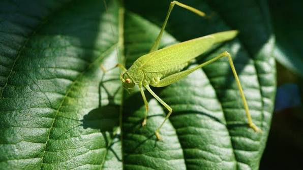

SALTAMONTES DEPREDADOR AUSTRALIANO
Chlorobalius leucoviridis

Imita con precisión el sonido de las cigarras hembra receptivas para atraer a los machos adultos y capturarlos.
- Nombre científico: Chlorobalius leucoviridis
- Mimetismo: Imita el sonido de las cigarras hembra receptivas para atraer a los machos adultos.
- Hábitat: Interior árido y semiárido de Australia.
- Sentido: Sonido.
- Uso: Caza.
- Función: Alimentarse y despistar.